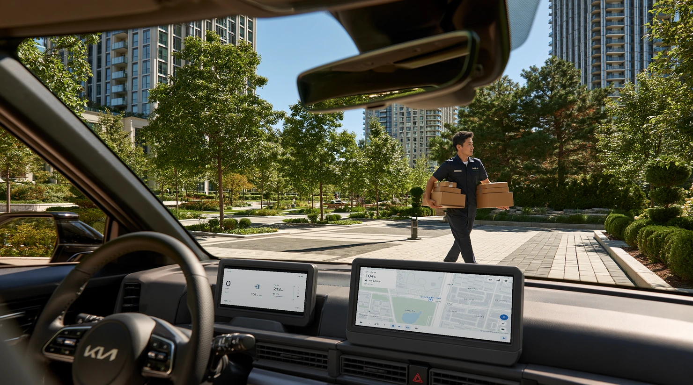
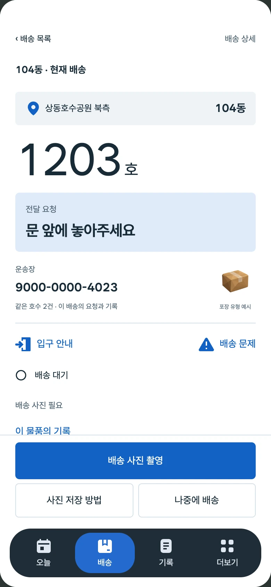
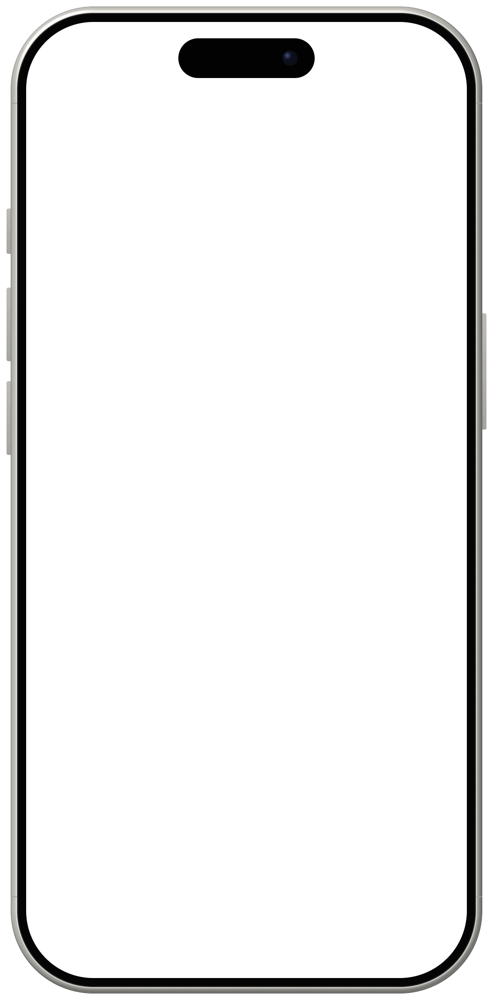
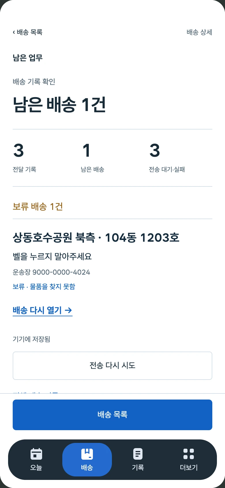

아파트 단지를 혼자 배송하는 기사를 위한 NEXT
차에서는 갈 곳을,문 앞에서는 할 일을
차량에서는 다음 동과 입구를 안내하고,
휴대폰에서는 배송별 요청을 확인하고 전달 결과를 기록합니다.

차량 콘셉트 이미지 · 화면은 NEXT UI 합성 · 차량 제조사와 무관
배송 흐름
배송이 진행되면 확인할 정보의 단위가 바뀝니다
기사는 단지에 차를 세우고, 물품을 들고 동과 입구를 찾아 들어가 문 앞에서 전달하고 기록합니다.
한국교통연구원 2022 실태조사에서 1.5톤 미만 택배 집·배송기사 312명 중 98.1%가 동승자 없이 일했습니다.
NEXT는 이 일을 한 사람이 번갈아 한다는 전제에서, 단계마다 지금 필요한 정보만 앞에 두도록 설계했습니다.



-
1/3
차 안
클러스터 · 센터페시아다음 회전과 거리, 정차 뒤 갈 동과 입구
- 상황
- 운전 중에는 화면을 짧게만 볼 수 있고, 차를 세운 곳과 입구가 다를 수 있습니다
- NEXT 화면
- 클러스터는 가운데 칸에 다음 회전, 센터페시아는 정차하면 동·입구 카드
- 근거
-
원문 사례한국일보 2024 · 단지 입구에 세우고 손수레로 운반
설계 가설정차 뒤 동·입구를 먼저 보여 주면 다시 찾는 일이 줄어든다
문헌NHTSA 2013 시선 기준(한 번 2초·누적 12초) 참고, 충족 시험 없음
-
2/3
문 앞
휴대폰지금 처리하는 배송의 호수와 그 배송의 요청
- 상황
- 같은 호수에 배송이 둘이면 요청이 다를 수 있고, 요청에 따라 놓는 자리와 이동 방법이 바뀝니다
- NEXT 화면
- 호수를 가장 큰 글자로, 바로 아래 칸에 그 배송의 요청
- 근거
-
원문 사례보배드림 2026 기사 댓글 · 요청에 따라 계단 이용·보관
설계 가설호수와 요청을 함께 보면 다시 찾는 일이 줄어든다
-
3/3
전달 후
휴대폰이 배송에서 끝낸 일과 남은 일, 미룬 배송
- 상황
- 사진 저장, 전달 기록, 배송사 수신은 서로 다른 일이고, 바로 전달하지 못하는 배송도 생깁니다
- NEXT 화면
- 사진 저장·전달 기록·전송 상태를 따로 적고, 보류한 배송은 남은 업무에서 다시 엽니다
- 근거
-
원문 사례쿠팡 플렉스 앱 리뷰 2023 · 회수했는데 기록은 미회수인 사례
설계 가설사진·전달·전송을 나눠 적고 보류를 남기면 남은 일을 덜 혼동한다
배송사 전송은 연결하지 않았고, 화면의 전송 실패는 시연 응답
시연에서는 세 화면에 같은 시점을 맞춰 보여 주며, 떨어진 기기 사이 동기화는 구현하지 않았습니다
작업 기록의 기준은 휴대폰이고, 세 화면이
모두 있어야만 배송할 수 있게 만들지 않았습니다
시연 범위
- 시연값배정 4건·호수·요청·경로 시간과
차량 수치는 시연용 값 - 규칙 기반두 방문 순서는 정해 둔 규칙,
음성 받아쓰기는 녹음에 맞춘 연출 - 브라우저 저장사진·전달 기록은 이 브라우저에만 저장,
서버로 보내지 않음 - 연결하지 않음배송사 전송, 떨어진 기기 사이 동기화
다음 기사 테스트에서 확인할 것
요청을 다시 찾는 횟수 · 미룬 배송 누락 · 기록 부담
출처
항목 오른쪽은 연도·라이선스·출처 종류 · 자체 = 자체 제작
문헌·보고서3
- 한국교통연구원 택배기사 실태조사 「1인 업무」2022
- Archives of Design Research 38(2)2025
- NHTSA 운전 주의분산 가이드라인 「시선」2013
기사·인터뷰8
- CLO / LoTIS 택배기사의 하루2017
- 국민일보 한 택배 기사의 하루2024
- 한국일보 차량 진입과 손수레 「입구」2024
- 비즈한국2024
- 보배드림 자유게시판 「요청」2026
- 쿠팡 플렉스 App Store 리뷰 「기록 상태」2023
- 디시 아르바이트 갤러리2017
- 오마이뉴스2023
공식 문서3
- Google Route Optimization 개요문서
- Google Time windows문서
- MDN SpeechRecognitionErrorEvent문서
3D7
- 운전석 3D 모델 cockpit_v8자체
- 라이트맵 Blender Cycles 굽기자체
- 휴대폰 모델 phone.glb자체
- 첫 배송지 주행 장면 구성자체
- 팔·손·소매 MakeHumanCC0
- three.js r180MIT
- Draco 디코더Apache 2.0
환경·재질 Poly Haven8
- 창밖·조명 Learner ParkCC0
- Asphalt 02CC0
- Patterned Concrete PaversCC0
- Concrete Floor 01CC0
- Leafy GrassCC0
- Leather Red 02CC0
- Leather WhiteCC0
- Jogging MelangeCC0
지도·글꼴2
- © OpenStreetMap contributorsODbL
- Wanted Sans 400 · 600OFL
소리6
- 원본 음성 두 구간 · 감스트GAMST인용
- 안내 음성 V1·V2·V3 · elevenlabs.io무료 플랜
- 휴대폰 진동 · PixabayPixabay
- 알림음·탭음 · KenneyCC0
- 카메라 셔터 · MixkitMixkit
- EV 시동음 · MixkitMixkit
화면·이미지7
- NEXT 세 기기 프로토타입자체
- NEXT 로고자체
- 히어로 차량 이미지콘셉트
- 포장 예시·차량 컨셉 이미지자체 생성
- 운전석 맥락 렌더자체
- 정면 휴대폰 프레임자체
- 기기 화면 캡처자체
레퍼런스17
- Polestar 4 디지털 계기판Polestar
- 밝은 EV 센터 디스플레이Dribbble
- CrackBehance
- Money MindBehance
- Apple 차세대 CarPlayTechSpot
- Car Platform ConceptBehance
- Social Concept ApplicationBehance
- AccuroBehance
- McLaren Artura 계기판Car Watch
- SLPXDribbble
- 알림 구성 보드Pinterest
- 롯데렌터카 G car웹
- 로터스자동차코리아웹
- Pensatori Irrazionali웹
- Plus X · CJ대한통운, B boxPlus X
- Plus X · British Council, CGVPlus X
- Plus X · 에어프레미아 외 2Plus X
출처 전체 보기
사실과 설계 판단
이 페이지는 근거 수준을 관련 설명 가까이에 문헌·원문 사례·설계 가설로 짧게 표시하고, 세부 출처와 구현 범위는 아래에 모았습니다. 정보 순위는 빈도를 잰 결과가 아니라 재기획서(2026-10-18)에서 정한 설계 순서입니다.
시연 범위
| 구분 | 항목 | 실제 상태 |
|---|---|---|
| 시연값 | 배정 4건, 호수, 요청, 운송장 번호 | 가상 값입니다. 내부 번호(A-023 등)가 실제 송장에 있다고 가정하지 않습니다 |
| 시연값 | 104동·105동, 104동 서쪽 공동현관 | 가상 식별자와 가상 안내입니다. 105동 입구는 등록하지 않았고 주차 가능 여부는 확인하지 않았습니다 |
| 시연값 | 경로 시간·거리 | 합성 값입니다. 실제 교통이나 최단 경로를 뜻하지 않습니다 |
| 시연값 | 속도·기어·배터리·주행 가능 거리·외기온·누적거리 | 차량 신호와 연결하지 않은 시연 값입니다 |
| 규칙 기반 | 배송 도우미의 두 방문 순서 | 정해 둔 규칙으로 두 순서를 보여 줍니다. 외부 AI·최적화·교통 API를 연결하지 않았습니다. 3D 체험은 북측 먼저 순서로만 이어집니다 |
| 규칙 기반 | 3D 체험의 음성 | 기사 대사는 지정 영상의 원본 녹음이고, 받아쓰기는 녹음 길이에 맞춘 연출입니다. 마이크로 실제 인식하지 않습니다 |
| 규칙 기반 | 지도 경로선 | 도로·공원·호수·건물 형상은 OpenStreetMap 좌표이고, 경로선은 차도를 이어 그린 도식입니다 |
| 규칙 기반 | 3D 체험의 주행 장면 | 도로·단지 배치와 건물은 코드로 만들고 바닥에 Poly Haven 실사 텍스처(CC0)를 입힌 가상 장면입니다. 실제 상동 지역의 거리 모습이 아닙니다 |
| 브라우저 저장 | 직접 찍거나 고른 사진, 전달 기록 | 방문자 브라우저에만 저장하고 서버로 보내지 않습니다. '직접 기록 지우기'로 지울 수 있습니다 |
| 연결하지 않음 | 배송사 전송·수신 | 배송사 서버가 없어 전달을 기록해도 '전송 대기'로 남습니다. '전송 실패 · 시연' '배송사 수신 · 시연'은 시연 응답입니다 |
| 연결하지 않음 | 차량 조작, 업무 종료 | 공조·음량은 화면 상태만 바뀝니다. 근태 시스템이나 배송사 마감과 연동하지 않습니다 |
| 검증하지 않음 | 효과와 실사용 | 기사 테스트, 실차 주행, 떨어진 기기 사이의 동기화는 하지 않았습니다. 시간 절감·안전성 효과는 확인 전입니다 |
기술 상세
- 기기 화면
- 3D 안과 이 페이지의 기기 화면은 현재 NEXT UI 복사본을 그대로 띄운 것입니다. 쇼잉을 위해 더한 것은 알림 본문, 음성 받아쓰기, 대기 점 같은 상태뿐입니다.
- 세 기기 연결
- 같은 출처의 세 화면에 같은 시점을 적용해 맞췄습니다. 실제로 떨어진 기기 사이의 동기화는 검증하지 않았습니다.
- 타임라인
- 기기 화면의 주행·정차 상태는 현재 UI의 연결 시연(122초 타임라인, 주행 시간 6배 압축)에서 가져왔습니다. 3D 체험의 첫 배송지 주행은 이 연결 시연의 출발~정차 구간을 짧게 줄여 재생합니다.
- 저장 위치
- 직접 기록 체험의 기록과 사진은 그 페이지를 보는 동안에만 브라우저 메모리와 임시 저장소에 두고, 페이지를 떠나거나 다시 들어오면 지웁니다. 다른 탭과 나누지 않고 서버로 보내지 않습니다.
- 카메라
- 브라우저 카메라 권한으로 열고, 카메라 화면을 닫거나 체험 구간을 벗어나면 끕니다. 권한이 없거나 카메라가 없으면 파일 선택으로 이어갑니다.
- 세 기기 공통
- 글꼴 Wanted Sans, NEXT용 채움형 아이콘, OpenStreetMap 벡터 지도. 화면 크기 800×400, 1280×720, 390×844는 설계 캔버스이며 실제 디스플레이 사양이 아닙니다.
- 3D 조명
- 실내 밝기는 Blender Cycles로 미리 구운 라이트맵 3장이고, 반사 환경은 창밖과 같은 learner_park HDRI(CC0)입니다. 가죽·대시보드·천장의 표면 결은 Poly Haven 재질(CC0)에서 노멀·러프니스만 가져왔습니다.
- 페이지 이미지
- 첫 화면 차량 이미지는 Codex 리디자인 작업에서 만든 콘셉트 이미지이고, 그 안의 화면은 NEXT UI입니다. 실제 차량 사진이 아닙니다. 배송 흐름의 차 안 장면은 3D 체험과 같은 자체 모델·조명·창밖으로 따로 렌더한 정지 이미지에 현재 NEXT UI 캡처를 원근에 맞춰 겹쳤습니다. 휴대폰 프레임은 devices.css(MIT) 구성을 참고해 팀이 새로 그렸습니다.
설계 참고 기준
주행 중 화면에 올릴 정보를 줄일 때 미국 NHTSA 자율 가이드라인(2013, 78 FR 24818)의 기준값, 한 번에 눈을 떼는 시간 2초 이하·누적 12초 이하를 참고했습니다. NEXT가 이 기준을 충족했다는 시험 결과는 없고, 실제 운전 중 조작 실험은 하지 않았습니다.
문헌·기사
문헌·보고서
- 한국교통연구원 · 2022 택배 집·배송기사 실태조사. 게시 2023.04.06, PDF 판권 2022년 12월. 조사 2022.10.24~11.18, 1.5톤 미만 집·배송기사 312명 방문 면접. 인쇄면 23쪽 표 Ⅲ-25(동승자 없음 98.1%), 표 Ⅲ-24(집하 1.5시간, 배송 6.7시간, 기타 근로 2.1시간). 98.1%는 2022 표본 312명의 동승자 없음 비율이며 2026년 전수 통계가 아닙니다 게시 페이지
- A Human-AI Collaborative Model Involving Humanoid Robots to Alleviate the Physical and Mental Burden of Delivery Workers · Archives of Design Research 38(2), 269–299, 2025년 5월. DOI 10.15187/adr.2025.05.38.2.269. Table 9~11(현직 기사 10명 파일럿 인터뷰, 2024.4.13~16) 원문 PDF
- NHTSA, “Visual-Manual NHTSA Driver Distraction Guidelines for In-Vehicle Electronic Devices”, 78 FR 24818, 2013.4.26. 자율 준수(nonbinding, voluntary) 지침. 2초 이하·누적 12초 이하 권고 문장은 본문 24821쪽, 2026.10.20 원문 확인 Federal Register
기사·인터뷰·보도
- 양석훈 · 택배기사의 하루를 쫓다 · CLO / LoTIS, 2017.11.24. CJ 파주대리점 기사 1명 인터뷰 원문
- 이가현 · “다들 저보고 곧 죽을 것 같대요” 한 택배 기사의 하루 · 국민일보, 2024.11.25 (동행 11.12) 원문
- 오세운 · 한국일보, 2024-05-02 04:30. 차량 진입과 손수레 운반 사례 원문
- 박해나 · 비즈한국, 2024-06-26 16:07 원문
- 보배드림 자유게시판 No=3413976, 댓글 2026-06-26 08:18 원문
- 쿠팡 플렉스 한국 App Store 리뷰(공덕내기 2023-12-06, ooBMWoo 2023-02-16, 유ㅗ튜어퍼어눙 2023-04-11) 원문
- 디시 아르바이트 갤러리 no=2294686, 2017-06-19 (출처성 주의) 원문
- 김하영 · 오마이뉴스(다음 게재), 2023-06-25 16:18 (OP 근무자 관찰, 기사 발언으로 세지 않음) 원문
공식 문서
- Google Route Optimization 개요 (본문 확인 2026.10.20). NEXT는 이 API를 연결하지 않았습니다 문서
- Google Time windows (본문 확인 2026.10.20) 문서
- MDN SpeechRecognitionErrorEvent.error 문서
내부 기획 문서
- NEXT 재기획서(2026-10-18), 하루 흐름 정리(day-flow, 2026-10-20), 콕핏·음성·모바일 구조 개발 노트(2026-10-20). 비공개 과제 문서
링크는 원문 위치입니다. LoTIS·국민일보 원문은 2026.10.18 검토 기록을 따릅니다
자산 출처·라이선스
자산 목록을 불러오는 중
레퍼런스
구성 원리만 참고했습니다. 이미지·브랜드·코드는 가져오지 않았고 분석용 사본은 게재하지 않습니다
| 레퍼런스 | 참고한 구성 | 쓴 곳 |
|---|---|---|
| Polestar 4 디지털 계기판 이미지, Polestar 중국 링크 · 핀 | 위쪽 무지 여백, 핸들 림 아치 안의 클러스터 | 서비스 소개, 클러스터 |
| 밝은 EV 센터 디스플레이, Benjamin Zehrfeldt Dribbble · 핀 | 바깥은 밝게 날리고 화면이 가장 큰 대비가 되는 운전석 1인칭 | 서비스 소개, 센터페시아 |
| Crack, Sanghee Park 외 Behance · 핀 · 핀 | 어두운 패널과 밝은 패널의 대비, 패널 경계를 넘는 폰, 패널 안 조작 부분 크롭 | 배송 흐름, 모바일 |
| Money Mind, Christina Zamriy Behance · 핀 | 패널 경계를 넘는 기기 높이 비율(30% 이하) | 배송 흐름, 직접 기록 |
| Apple 차세대 CarPlay 이미지, TechSpot 2024-06-11 링크 · 핀 | 실내는 어둡게 누르고 화면만 밝게 남기기 | 배송 흐름 |
| Car Platform Concept Application, yuhang lu Behance · 핀 | 명도가 바뀌는 경계에 걸친 기기, 무채색 실내 속 컬러 화면, 같은 자리 안내선 | 직접 기록, 센터페시아, 클러스터 |
| Social Concept Application, yuhang lu Behance · 핀 | 정면 화면과 라벨, 가는 지시선 | 모바일 |
| Accuro, Titiran Design 외 Behance · 핀 | 목록에서 지금 항목만 밝게, 꺾은 선으로 한 점 짚기 | 상단 메뉴, 직접 기록, 모바일 |
| McLaren Artura 계기판 시승기 사진, Car Watch 링크 · 핀 | 크기 대비 하나로 만드는 위계 | 클러스터 |
| SLPX, RonDesignLab Dribbble · 핀 | 조작 부분만 크게 자르고, 재질은 가장자리에만, 초점은 한 요소에 | 모바일 |
| 알림 구성 보드(원작자 미상) 핀 | 같은 축 위에서 상태를 작은 것에서 큰 것으로 | 센터페시아 |
| 롯데렌터카 G car 링크 | 기기는 같은 자리, 지금 단계 글만 진하게 | 직접 기록 |
| 로터스자동차코리아 링크 | 넓은 장면 위에는 상태 단어 하나, 설명은 장면 밖으로 | 클러스터, 센터페시아 |
| Pensatori Irrazionali 링크 | 안쪽 카드에서 전체 화면으로 들어가기, 같은 머리 행 반복 | 3D 체험 진입, 기기별 설계 |
| Plus X · CJ대한통운 링크 · B box 링크 | 무지 밝은 판과 두 겹 그림자, 관계를 먼저 보이고 상세는 뒤로 | 페이지 공통, 배송 흐름 |
| Plus X · British Council Words 링크 · CGV iPad 링크 | 번호와 선으로 순서 잇기, 같은 크기 반복은 피함 | 모바일, 센터페시아 |
| Plus X · 에어프레미아, MUSINSA 2.0, 우티 포트폴리오 | 테 없는 평면 화면, 패널 안 잘린 폰과 크기 차이, 장식 없는 목록 | 클러스터, 센터페시아, 모바일, 출처 |